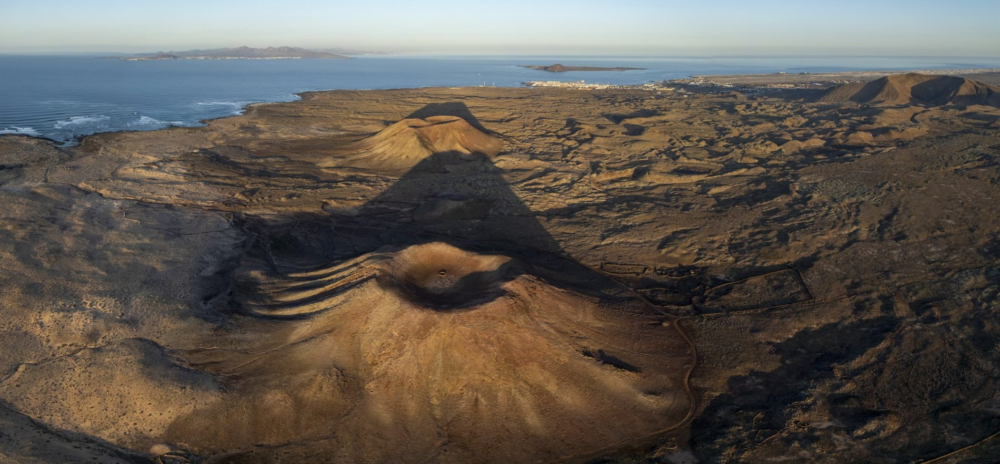
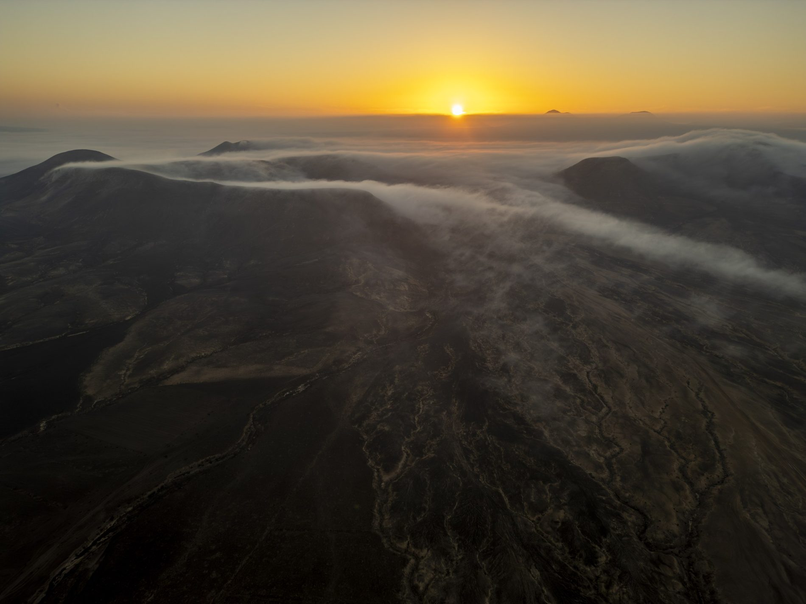

Las pirámides y sus historias
Mostrar la arquitectura, el recorrido y las exposiciones con imágenes que inviten a descubrir el parque en persona.

FOTOGRAFÍA Y VÍDEO · UNA PROPUESTA PARA PIRÁMIDES DE GÜÍMAR
Una producción visual para mostrar el patrimonio, la naturaleza y las experiencias que esperan en vuestro parque.
Descubrir la propuestaLA OPORTUNIDAD
Las pirámides atraen la mirada. El jardín botánico, el museo y el Sendero de Aves amplían la visita y despiertan nuevas preguntas.
Propongo crear fotografía y vídeo en el parque para enseñar esas experiencias de forma cercana y ayudar a vuestros visitantes a imaginar su recorrido antes de llegar.
Las fotografías de esta propuesta pertenecen a mi archivo y muestran mi estilo. No representan las instalaciones del parque; la producción se realizaría en Güímar junto a vuestro equipo.
UNA PRODUCCIÓN PARA VUESTRA PROMOCIÓN
Empezaríamos por las experiencias que queráis dar a conocer y adaptaríamos la producción a vuestro calendario y necesidades.
Mostrar la arquitectura, el recorrido y las exposiciones con imágenes que inviten a descubrir el parque en persona.
Acercar la diversidad botánica y la experiencia del sendero mediante detalles, observación y participación de visitantes.
Contar el parque a través de familias, parejas y guías, y dar visibilidad a sus actividades educativas y culturales.

UNA IDEA PARA VUESTRA AGENDA
El doble ocaso del solsticio puede ser una oportunidad para crear una pieza ligada a un momento singular del parque, si coincide con vuestras prioridades y calendario.
CÓMO PODEMOS TRABAJAR
Podéis utilizar las fotografías y el vídeo en vuestra web, redes y campañas, con los usos que acordemos. También podemos desarrollar juntos una campaña completa.
Soy Juan Aizpuru, fotógrafo y realizador. Trabajo con un equipo profesional y puedo adaptar el tiempo de producción al proyecto, colaborando con vuestro personal y profesionales locales.
El alcance y la licencia de uso se acuerdan para cada proyecto. Mantengo la autoría y la propiedad del material.
Conocer mi trabajoFITUR 2027 · MADRID
Me gustaría conoceros en FITUR y hablar de las experiencias que queréis impulsar.
Hablemos en FITUR